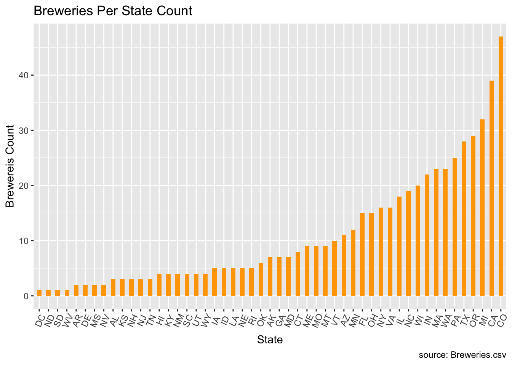

library(plyr)
library(dplyr)##
## Attaching package: 'dplyr'## The following objects are masked from 'package:plyr':
##
## arrange, count, desc, failwith, id, mutate, rename, summarise,
## summarize## The following objects are masked from 'package:stats':
##
## filter, lag## The following objects are masked from 'package:base':
##
## intersect, setdiff, setequal, unionlibrary(magrittr)
library(rlang)##
## Attaching package: 'rlang'## The following object is masked from 'package:magrittr':
##
## set_nameslibrary(ggplot2)
library(ggthemes)
library(knitr)
library(kableExtra)##
## Attaching package: 'kableExtra'## The following object is masked from 'package:dplyr':
##
## group_rowslibrary(class)
library(caret)## Loading required package: latticelibrary(e1071)
library(ggthemes)
library(tidyverse)## ── Attaching packages ───────────────────────────────────────────────────────────────────────────────────── tidyverse 1.3.0 ──## ✓ tibble 3.0.1 ✓ purrr 0.3.4
## ✓ tidyr 1.1.0 ✓ stringr 1.4.0
## ✓ readr 1.3.1 ✓ forcats 0.5.0## ── Conflicts ──────────────────────────────────────────────────────────────────────────────────────── tidyverse_conflicts() ──
## x purrr::%@%() masks rlang::%@%()
## x dplyr::arrange() masks plyr::arrange()
## x purrr::as_function() masks rlang::as_function()
## x purrr::compact() masks plyr::compact()
## x dplyr::count() masks plyr::count()
## x tidyr::extract() masks magrittr::extract()
## x dplyr::failwith() masks plyr::failwith()
## x dplyr::filter() masks stats::filter()
## x purrr::flatten() masks rlang::flatten()
## x purrr::flatten_chr() masks rlang::flatten_chr()
## x purrr::flatten_dbl() masks rlang::flatten_dbl()
## x purrr::flatten_int() masks rlang::flatten_int()
## x purrr::flatten_lgl() masks rlang::flatten_lgl()
## x purrr::flatten_raw() masks rlang::flatten_raw()
## x kableExtra::group_rows() masks dplyr::group_rows()
## x dplyr::id() masks plyr::id()
## x purrr::invoke() masks rlang::invoke()
## x dplyr::lag() masks stats::lag()
## x purrr::lift() masks caret::lift()
## x purrr::list_along() masks rlang::list_along()
## x purrr::modify() masks rlang::modify()
## x dplyr::mutate() masks plyr::mutate()
## x purrr::prepend() masks rlang::prepend()
## x dplyr::rename() masks plyr::rename()
## x purrr::set_names() masks rlang::set_names(), magrittr::set_names()
## x purrr::splice() masks rlang::splice()
## x dplyr::summarise() masks plyr::summarise()
## x dplyr::summarize() masks plyr::summarize()library(GGally)## Registered S3 method overwritten by 'GGally':
## method from
## +.gg ggplot2##
## Attaching package: 'GGally'## The following object is masked from 'package:dplyr':
##
## nasalibrary(doBy)##
## Attaching package: 'doBy'## The following object is masked from 'package:dplyr':
##
## order_bylibrary(ggmap)## Google's Terms of Service: https://cloud.google.com/maps-platform/terms/.## Please cite ggmap if you use it! See citation("ggmap") for details.##
## Attaching package: 'ggmap'## The following object is masked from 'package:magrittr':
##
## insetlibrary(maps)##
## Attaching package: 'maps'## The following object is masked from 'package:purrr':
##
## map## The following object is masked from 'package:plyr':
##
## ozonelibrary(openintro)## Please visit openintro.org for free statistics materials##
## Attaching package: 'openintro'## The following object is masked from 'package:caret':
##
## dotPlot## The following object is masked from 'package:lattice':
##
## lsegments## The following object is masked from 'package:ggplot2':
##
## diamonds## The following objects are masked from 'package:datasets':
##
## cars, treeslibrary(stringr)
library(mice)##
## Attaching package: 'mice'## The following objects are masked from 'package:base':
##
## cbind, rbind# Read beer and breweries data set using read.csv
Beers <- read.csv("//Users/lijjumathew/Library/Mobile Documents/com~apple~CloudDocs/Lijju/SMU/Courses/Doing Data Science/Project/CaseStudy1_2_2_2_2_2/Beers.csv", header = TRUE, sep = ",")
Breweries <- read.csv("/Users/lijjumathew/Library/Mobile Documents/com~apple~CloudDocs/Lijju/SMU/Courses/Doing Data Science/Project/CaseStudy1_2_2_2_2_2/Breweries.csv", header = TRUE, sep = ",")
summary(Beers)## Name Beer_ID ABV
## Nonstop Hef Hop : 12 Min. : 1.0 Min. :0.00100
## Dale's Pale Ale : 6 1st Qu.: 808.2 1st Qu.:0.05000
## Oktoberfest : 6 Median :1453.5 Median :0.05600
## Longboard Island Lager: 4 Mean :1431.1 Mean :0.05977
## 1327 Pod's ESB : 3 3rd Qu.:2075.8 3rd Qu.:0.06700
## Boston Lager : 3 Max. :2692.0 Max. :0.12800
## (Other) :2376 NA's :62
## IBU Brewery_id Style
## Min. : 4.00 Min. : 1.0 American IPA : 424
## 1st Qu.: 21.00 1st Qu.: 94.0 American Pale Ale (APA) : 245
## Median : 35.00 Median :206.0 American Amber / Red Ale : 133
## Mean : 42.71 Mean :232.7 American Blonde Ale : 108
## 3rd Qu.: 64.00 3rd Qu.:367.0 American Double / Imperial IPA: 105
## Max. :138.00 Max. :558.0 American Pale Wheat Ale : 97
## NA's :1005 (Other) :1298
## Ounces
## Min. : 8.40
## 1st Qu.:12.00
## Median :12.00
## Mean :13.59
## 3rd Qu.:16.00
## Max. :32.00
## str(Beers)## 'data.frame': 2410 obs. of 7 variables:
## $ Name : Factor w/ 2305 levels "#001 Golden Amber Lager",..: 1638 577 1704 1842 1819 268 1160 758 1093 486 ...
## $ Beer_ID : int 1436 2265 2264 2263 2262 2261 2260 2259 2258 2131 ...
## $ ABV : num 0.05 0.066 0.071 0.09 0.075 0.077 0.045 0.065 0.055 0.086 ...
## $ IBU : int NA NA NA NA NA NA NA NA NA NA ...
## $ Brewery_id: int 409 178 178 178 178 178 178 178 178 178 ...
## $ Style : Factor w/ 100 levels "","Abbey Single Ale",..: 19 18 16 12 16 80 18 22 18 12 ...
## $ Ounces : num 12 12 12 12 12 12 12 12 12 12 ...summary(Breweries)## Brew_ID Name City State
## Min. : 1.0 Blackrocks Brewery : 2 Portland: 17 CO : 47
## 1st Qu.:140.2 Blue Mountain Brewery : 2 Boulder : 9 CA : 39
## Median :279.5 Lucette Brewing Company: 2 Chicago : 9 MI : 32
## Mean :279.5 Oskar Blues Brewery : 2 Seattle : 9 OR : 29
## 3rd Qu.:418.8 Otter Creek Brewing : 2 Austin : 8 TX : 28
## Max. :558.0 Sly Fox Brewing Company: 2 Denver : 8 PA : 25
## (Other) :546 (Other) :498 (Other):358str(Breweries)## 'data.frame': 558 obs. of 4 variables:
## $ Brew_ID: int 1 2 3 4 5 6 7 8 9 10 ...
## $ Name : Factor w/ 551 levels "10 Barrel Brewing Company",..: 355 12 266 319 201 136 227 477 59 491 ...
## $ City : Factor w/ 384 levels "Abingdon","Abita Springs",..: 228 200 122 299 300 62 91 48 152 136 ...
## $ State : Factor w/ 51 levels " AK"," AL"," AR",..: 24 18 20 5 5 41 6 23 23 23 ...nrow(Beers)## [1] 2410nrow(Breweries)## [1] 558detach(package:plyr)
library(dplyr)# Barchart to represent the number of breweries per state ordered
BrewPerState <-table(Breweries$State)
BrewPerState##
## AK AL AR AZ CA CO CT DC DE FL GA HI IA ID IL IN KS KY LA MA
## 7 3 2 11 39 47 8 1 2 15 7 4 5 5 18 22 3 4 5 23
## MD ME MI MN MO MS MT NC ND NE NH NJ NM NV NY OH OK OR PA RI
## 7 9 32 12 9 2 9 19 1 5 3 3 4 2 16 15 6 29 25 5
## SC SD TN TX UT VA VT WA WI WV WY
## 4 1 3 28 4 16 10 23 20 1 4Breweries %>% group_by(State) %>% summarize(count = n()) %>% ggplot(aes(x=reorder(State, count), y = count)) +
geom_bar(stat="identity", width=.5, fill="orange") +
labs(title="Breweries Per State Count",
x = "State",
y = "Brewereis Count",
caption="source: Breweries.csv") +
theme(axis.text.x = element_text(angle=65, vjust=0.6))
# Renamed Brewery_id to Brew_ID to satisfy merging requirement
Beers <- rename(Beers, Brew_ID = Brewery_id)
BrewPub <- merge(Beers, Breweries, by="Brew_ID")
nrow(BrewPub)## [1] 2410# Rename Name.x as Beer_Name and Name.y as Brewery_Name
BrewPub <- rename(BrewPub, Beer_Name = Name.x)
BrewPub <- rename(BrewPub, Brewery_Name = Name.y)
# First 6 observations of the merged file
head(BrewPub, 6)## Brew_ID Beer_Name Beer_ID ABV IBU Style
## 1 1 Get Together 2692 0.045 50 American IPA
## 2 1 Maggie's Leap 2691 0.049 26 Milk / Sweet Stout
## 3 1 Wall's End 2690 0.048 19 English Brown Ale
## 4 1 Pumpion 2689 0.060 38 Pumpkin Ale
## 5 1 Stronghold 2688 0.060 25 American Porter
## 6 1 Parapet ESB 2687 0.056 47 Extra Special / Strong Bitter (ESB)
## Ounces Brewery_Name City State
## 1 16 NorthGate Brewing Minneapolis MN
## 2 16 NorthGate Brewing Minneapolis MN
## 3 16 NorthGate Brewing Minneapolis MN
## 4 16 NorthGate Brewing Minneapolis MN
## 5 16 NorthGate Brewing Minneapolis MN
## 6 16 NorthGate Brewing Minneapolis MNkable(head(BrewPub, 6))| Brew_ID | Beer_Name | Beer_ID | ABV | IBU | Style | Ounces | Brewery_Name | City | State |
|---|---|---|---|---|---|---|---|---|---|
| 1 | Get Together | 2692 | 0.045 | 50 | American IPA | 16 | NorthGate Brewing | Minneapolis | MN |
| 1 | Maggie’s Leap | 2691 | 0.049 | 26 | Milk / Sweet Stout | 16 | NorthGate Brewing | Minneapolis | MN |
| 1 | Wall’s End | 2690 | 0.048 | 19 | English Brown Ale | 16 | NorthGate Brewing | Minneapolis | MN |
| 1 | Pumpion | 2689 | 0.060 | 38 | Pumpkin Ale | 16 | NorthGate Brewing | Minneapolis | MN |
| 1 | Stronghold | 2688 | 0.060 | 25 | American Porter | 16 | NorthGate Brewing | Minneapolis | MN |
| 1 | Parapet ESB | 2687 | 0.056 | 47 | Extra Special / Strong Bitter (ESB) | 16 | NorthGate Brewing | Minneapolis | MN |
# Last 6 observations of the merged file
tail(BrewPub,6)## Brew_ID Beer_Name Beer_ID ABV IBU
## 2405 556 Pilsner Ukiah 98 0.055 NA
## 2406 557 Heinnieweisse Weissebier 52 0.049 NA
## 2407 557 Snapperhead IPA 51 0.068 NA
## 2408 557 Moo Thunder Stout 50 0.049 NA
## 2409 557 Porkslap Pale Ale 49 0.043 NA
## 2410 558 Urban Wilderness Pale Ale 30 0.049 NA
## Style Ounces Brewery_Name City
## 2405 German Pilsener 12 Ukiah Brewing Company Ukiah
## 2406 Hefeweizen 12 Butternuts Beer and Ale Garrattsville
## 2407 American IPA 12 Butternuts Beer and Ale Garrattsville
## 2408 Milk / Sweet Stout 12 Butternuts Beer and Ale Garrattsville
## 2409 American Pale Ale (APA) 12 Butternuts Beer and Ale Garrattsville
## 2410 English Pale Ale 12 Sleeping Lady Brewing Company Anchorage
## State
## 2405 CA
## 2406 NY
## 2407 NY
## 2408 NY
## 2409 NY
## 2410 AKkable(tail(BrewPub,6))| Brew_ID | Beer_Name | Beer_ID | ABV | IBU | Style | Ounces | Brewery_Name | City | State | |
|---|---|---|---|---|---|---|---|---|---|---|
| 2405 | 556 | Pilsner Ukiah | 98 | 0.055 | NA | German Pilsener | 12 | Ukiah Brewing Company | Ukiah | CA |
| 2406 | 557 | Heinnieweisse Weissebier | 52 | 0.049 | NA | Hefeweizen | 12 | Butternuts Beer and Ale | Garrattsville | NY |
| 2407 | 557 | Snapperhead IPA | 51 | 0.068 | NA | American IPA | 12 | Butternuts Beer and Ale | Garrattsville | NY |
| 2408 | 557 | Moo Thunder Stout | 50 | 0.049 | NA | Milk / Sweet Stout | 12 | Butternuts Beer and Ale | Garrattsville | NY |
| 2409 | 557 | Porkslap Pale Ale | 49 | 0.043 | NA | American Pale Ale (APA) | 12 | Butternuts Beer and Ale | Garrattsville | NY |
| 2410 | 558 | Urban Wilderness Pale Ale | 30 | 0.049 | NA | English Pale Ale | 12 | Sleeping Lady Brewing Company | Anchorage | AK |
summary(BrewPub)## Brew_ID Beer_Name Beer_ID
## Min. : 1.0 Nonstop Hef Hop : 12 Min. : 1.0
## 1st Qu.: 94.0 Dale's Pale Ale : 6 1st Qu.: 808.2
## Median :206.0 Oktoberfest : 6 Median :1453.5
## Mean :232.7 Longboard Island Lager: 4 Mean :1431.1
## 3rd Qu.:367.0 1327 Pod's ESB : 3 3rd Qu.:2075.8
## Max. :558.0 Boston Lager : 3 Max. :2692.0
## (Other) :2376
## ABV IBU Style
## Min. :0.00100 Min. : 4.00 American IPA : 424
## 1st Qu.:0.05000 1st Qu.: 21.00 American Pale Ale (APA) : 245
## Median :0.05600 Median : 35.00 American Amber / Red Ale : 133
## Mean :0.05977 Mean : 42.71 American Blonde Ale : 108
## 3rd Qu.:0.06700 3rd Qu.: 64.00 American Double / Imperial IPA: 105
## Max. :0.12800 Max. :138.00 American Pale Wheat Ale : 97
## NA's :62 NA's :1005 (Other) :1298
## Ounces Brewery_Name City
## Min. : 8.40 Brewery Vivant : 62 Grand Rapids: 66
## 1st Qu.:12.00 Oskar Blues Brewery : 46 Portland : 64
## Median :12.00 Sun King Brewing Company : 38 Chicago : 55
## Mean :13.59 Cigar City Brewing Company: 25 Indianapolis: 43
## 3rd Qu.:16.00 Sixpoint Craft Ales : 24 San Diego : 42
## Max. :32.00 Hopworks Urban Brewery : 23 Boulder : 41
## (Other) :2192 (Other) :2099
## State
## CO : 265
## CA : 183
## MI : 162
## IN : 139
## TX : 130
## OR : 125
## (Other):1406MissingValues <- sapply(BrewPub, function(x)sum(is.na(x)))
# Used kable library to make document more presentable
MissingValues %>% kable("html") %>% kable_styling()| x | |
|---|---|
| Brew_ID | 0 |
| Beer_Name | 0 |
| Beer_ID | 0 |
| ABV | 62 |
| IBU | 1005 |
| Style | 0 |
| Ounces | 0 |
| Brewery_Name | 0 |
| City | 0 |
| State | 0 |
#Missing data and percentage plot
missing.values <- BrewPub %>%
gather(key = "key", value = "val") %>%
dplyr::mutate(isna = is.na(val)) %>%
dplyr::group_by(key) %>%
dplyr::mutate(total = n()) %>%
dplyr::group_by(key, total, isna)%>%
dplyr::summarise(num.isna = n())%>%
dplyr::mutate(pct = num.isna / total * 100)## Warning: attributes are not identical across measure variables;
## they will be droppedlevels <- (missing.values %>% filter(isna == T) %>% arrange(desc(pct)))$key
percentage.plot <- missing.values %>%
ggplot() + geom_bar(aes(x = reorder(key, desc(pct)), y = pct, fill=isna), stat = 'identity', alpha=1) +
scale_x_discrete(limits = levels) +
scale_fill_manual(name = "", values = c('steelblue', 'tomato3'), labels = c("Present", "Missing")) +
coord_flip() +
labs(title = "Percentage of missing values", x = 'Variable', y = "% of missing values")
percentage.plot## Warning: Removed 8 rows containing missing values (position_stack).# Fill missing values with mean of that column
tempData <- mice(BrewPub,m=1,maxit=0,meth='fastpmm',seed=500)
BrewPubFinal <- complete(tempData,1)
# Final check missing values
sort(sapply(BrewPubFinal, function(x) sum(is.na(x))), decreasing = T)## Brew_ID Beer_Name Beer_ID ABV IBU Style
## 0 0 0 0 0 0
## Ounces Brewery_Name City State
## 0 0 0 0# Compute the median alcohol content unit for each state.
Alcohol <- BrewPubFinal %>% group_by(State) %>% summarize(Median = median(ABV)) %>% arrange(Median)
# Compute the median international bitterness unit for each state.
Bitter <- BrewPubFinal %>% group_by(State) %>% summarize(Median = median(IBU)) %>% arrange(Median)
# Plot a bar chart to compare ABV by state
ggplot(data=Alcohol, aes(x=State, y=Median)) +
geom_bar(stat="identity", fill="blue")+
ggtitle("Median ABV by State") +
labs(x="State",y="ABV")# Plot a bar chart to compare IBU by state
ggplot(data=Bitter, aes(x=State, y=Median)) +
geom_bar(stat="identity", fill="blue")+
ggtitle("Median IBU by State") +
labs(x="State",y="IBU")#Which state has the maximum ABV beer? Wich state has the highest IBU beer?
BrewPubFinal[which.max(BrewPubFinal$ABV),]## Brew_ID Beer_Name Beer_ID ABV
## 375 52 Lee Hill Series Vol. 5 - Belgian Style Quadrupel Ale 2565 0.128
## IBU Style Ounces Brewery_Name City State
## 375 36 Quadrupel (Quad) 19.2 Upslope Brewing Company Boulder COkable(BrewPubFinal[which.max(BrewPubFinal$ABV),])| Brew_ID | Beer_Name | Beer_ID | ABV | IBU | Style | Ounces | Brewery_Name | City | State | |
|---|---|---|---|---|---|---|---|---|---|---|
| 375 | 52 | Lee Hill Series Vol. 5 - Belgian Style Quadrupel Ale | 2565 | 0.128 | 36 | Quadrupel (Quad) | 19.2 | Upslope Brewing Company | Boulder | CO |
BrewPubFinal[which.max(BrewPubFinal$IBU),]## Brew_ID Beer_Name Beer_ID ABV IBU
## 1857 375 Bitter Bitch Imperial IPA 980 0.082 138
## Style Ounces Brewery_Name City
## 1857 American Double / Imperial IPA 12 Astoria Brewing Company Astoria
## State
## 1857 ORkable(BrewPubFinal[which.max(BrewPubFinal$IBU),])| Brew_ID | Beer_Name | Beer_ID | ABV | IBU | Style | Ounces | Brewery_Name | City | State | |
|---|---|---|---|---|---|---|---|---|---|---|
| 1857 | 375 | Bitter Bitch Imperial IPA | 980 | 0.082 | 138 | American Double / Imperial IPA | 12 | Astoria Brewing Company | Astoria | OR |
BeerSummary <- (summary(BrewPub$ABV))
print(BeerSummary)## Min. 1st Qu. Median Mean 3rd Qu. Max. NA's
## 0.00100 0.05000 0.05600 0.05977 0.06700 0.12800 62ggplot(BrewPub, aes(x=ABV)) + geom_histogram(color = "blue", fill = "white") + xlab("Alcohol by Volume")## `stat_bin()` using `bins = 30`. Pick better value with `binwidth`.## Warning: Removed 62 rows containing non-finite values (stat_bin).# When we look at summary statistics of Alcohol by volume, we see that we have some beers don’t even measure 1%. Median was 5.6%, Mean or average was 5.9% and the maximum ABV was around 13%. Also, note that we are missing 62 values in the dataset that we were provided
# Draw a scatter plot to compare relationship between beer bitterness and alcohol content
ggplot(BrewPubFinal, aes(x=IBU, y= ABV)) +
geom_point(shape=1) +
geom_smooth(method=lm) + # add linear regression line
ggtitle("Correlation between IBU and ABV") +
labs(x="IBU - Bitterness of the beer",y="ABV - Alcoholic content of the beer")## `geom_smooth()` using formula 'y ~ x'# Pearson's product-moment correlation
cor.test(BrewPubFinal$ABV,BrewPub$IBU)##
## Pearson's product-moment correlation
##
## data: BrewPubFinal$ABV and BrewPub$IBU
## t = 33.863, df = 1403, p-value < 2.2e-16
## alternative hypothesis: true correlation is not equal to 0
## 95 percent confidence interval:
## 0.6407982 0.6984238
## sample estimates:
## cor
## 0.6706215#Question 8: Budweiser would also like to investigate the difference with respect to IBU and ABV between IPAs (India Pale Ales) and other types of Ale (any beer with “Ale” in its name other than IPA). You decide to use KNN clustering to investigate this relationship. Provide statistical evidence one way or the other. You can of course assume your audience is comfortable with percentages . KNN is very easy to understand.
BrewPubFinal$BeerType <- ifelse(grepl("Ale$", BrewPubFinal$Style, ignore.case = T), "Other Type Ale",
ifelse(grepl("IPA$", BrewPubFinal$Style, ignore.case = T ), "India Pale Ale", "Other Type"))
#Change BeerType to a factor and IBU/ABV to numeric
BrewPubFinal$BeerType = as.factor(BrewPubFinal$BeerType)
BrewPubFinal$ABV<-as.numeric(as.character(BrewPubFinal$ABV))
BrewPubFinal$IBU<-as.numeric(as.character(BrewPubFinal$IBU))
# When looking at the beers by ounces, it appears that IPAs have higher median ABV values than other Ales.
#Selecting for only IPAs and Other Ales.
BrewPubIPAOther = BrewPubFinal %>% filter(!is.na(BeerType) & !is.na(IBU) &!is.na(ABV)) %>%
filter(BeerType == "India Pale Ale" | BeerType == "Other Type Ale")
summary(BrewPubIPAOther)## Brew_ID Beer_Name Beer_ID ABV
## Min. : 1 Nonstop Hef Hop : 12 Min. : 4 Min. :0.02700
## 1st Qu.: 85 Dagger Falls IPA : 3 1st Qu.: 786 1st Qu.:0.05100
## Median :207 312 Urban Wheat Ale : 2 Median :1478 Median :0.06000
## Mean :229 Beach Blonde : 2 Mean :1430 Mean :0.06234
## 3rd Qu.:361 Bitter Biker Double IPA: 2 3rd Qu.:2085 3rd Qu.:0.07000
## Max. :558 Blacktop Blonde : 2 Max. :2692 Max. :0.09900
## (Other) :1238
## IBU Style Ounces
## Min. : 4.00 American IPA :424 Min. :12.00
## 1st Qu.: 23.00 American Amber / Red Ale :133 1st Qu.:12.00
## Median : 42.00 American Blonde Ale :108 Median :12.00
## Mean : 48.17 American Double / Imperial IPA:105 Mean :13.64
## 3rd Qu.: 70.00 American Pale Wheat Ale : 97 3rd Qu.:16.00
## Max. :138.00 American Brown Ale : 70 Max. :32.00
## (Other) :324
## Brewery_Name City State
## Brewery Vivant : 35 Portland : 38 CO :134
## Oskar Blues Brewery : 24 Grand Rapids: 37 CA :105
## Hopworks Urban Brewery : 19 Chicago : 32 MI : 86
## Cigar City Brewing Company: 16 San Diego : 29 OR : 71
## Sun King Brewing Company : 16 Denver : 25 IN : 70
## Sixpoint Craft Ales : 14 Boulder : 21 TX : 63
## (Other) :1137 (Other) :1079 (Other):732
## BeerType
## India Pale Ale:558
## Other Type : 0
## Other Type Ale:703
##
##
##
## BrewPubIPAOther = droplevels(BrewPubIPAOther, exclude = "Other Type")
summary(BrewPubIPAOther)## Brew_ID Beer_Name Beer_ID ABV
## Min. : 1 Nonstop Hef Hop : 12 Min. : 4 Min. :0.02700
## 1st Qu.: 85 Dagger Falls IPA : 3 1st Qu.: 786 1st Qu.:0.05100
## Median :207 312 Urban Wheat Ale : 2 Median :1478 Median :0.06000
## Mean :229 Beach Blonde : 2 Mean :1430 Mean :0.06234
## 3rd Qu.:361 Bitter Biker Double IPA: 2 3rd Qu.:2085 3rd Qu.:0.07000
## Max. :558 Blacktop Blonde : 2 Max. :2692 Max. :0.09900
## (Other) :1238
## IBU Style Ounces
## Min. : 4.00 American IPA :424 Min. :12.00
## 1st Qu.: 23.00 American Amber / Red Ale :133 1st Qu.:12.00
## Median : 42.00 American Blonde Ale :108 Median :12.00
## Mean : 48.17 American Double / Imperial IPA:105 Mean :13.64
## 3rd Qu.: 70.00 American Pale Wheat Ale : 97 3rd Qu.:16.00
## Max. :138.00 American Brown Ale : 70 Max. :32.00
## (Other) :324
## Brewery_Name City State
## Brewery Vivant : 35 Portland : 38 CO :134
## Oskar Blues Brewery : 24 Grand Rapids: 37 CA :105
## Hopworks Urban Brewery : 19 Chicago : 32 MI : 86
## Cigar City Brewing Company: 16 San Diego : 29 OR : 71
## Sun King Brewing Company : 16 Denver : 25 IN : 70
## Sixpoint Craft Ales : 14 Boulder : 21 TX : 63
## (Other) :1137 (Other) :1079 (Other):732
## BeerType
## India Pale Ale:558
## Other Type Ale:703
##
##
##
##
## BrewPubIPAOther %>% ggplot(aes(x=IBU, ABV, color = BeerType)) + geom_point()set.seed(1000)
iterations = 20
splitPerc = .70
trainIndices = sample(1:dim(BrewPubIPAOther)[1],round(splitPerc * dim(BrewPubIPAOther)[1]))
train = BrewPubIPAOther[trainIndices,]
test = BrewPubIPAOther[-trainIndices,]
accs = data.frame(accuracy = numeric(iterations), k = numeric(iterations))
for(i in 1:iterations)
{
classifications = knn(train[,c(4,5)],test[,c(4,5)],train$BeerType, prob = TRUE, k = i)
table(test$BeerType,classifications)
CM = confusionMatrix(table(test$BeerType,classifications))
accs$accuracy[i] = CM$overall[1]
accs$k[i] = i
}
plot(accs$k,accs$accuracy, type = "l", xlab = "k", ylab="Accuracy")#k=9 since the accuracy graph seems to level off at a high point around there.
classifications = knn(train[,c(4,5)],test[,c(4,5)],train$BeerType, prob = TRUE, k = 9)
table(test$BeerType,classifications)## classifications
## India Pale Ale Other Type Ale
## India Pale Ale 127 42
## Other Type Ale 50 159CM = confusionMatrix(table(test$BeerType,classifications))
CM## Confusion Matrix and Statistics
##
## classifications
## India Pale Ale Other Type Ale
## India Pale Ale 127 42
## Other Type Ale 50 159
##
## Accuracy : 0.7566
## 95% CI : (0.7101, 0.799)
## No Information Rate : 0.5317
## P-Value [Acc > NIR] : <2e-16
##
## Kappa : 0.5099
##
## Mcnemar's Test P-Value : 0.4655
##
## Sensitivity : 0.7175
## Specificity : 0.7910
## Pos Pred Value : 0.7515
## Neg Pred Value : 0.7608
## Prevalence : 0.4683
## Detection Rate : 0.3360
## Detection Prevalence : 0.4471
## Balanced Accuracy : 0.7543
##
## 'Positive' Class : India Pale Ale
## #Question 9 - Other Insights - Niaeve Bayes # Naive Bayes method to investigate the difference with respect to IBU and ABV between IPAs and Other Type of Ale
#We also tested wither a different model, the Naieve Bayes, would be a more accurate predictor. This model is different in that it uses given data to predict an uknown factor using probabilities that are calculated from the known data.
model = naiveBayes(BrewPubIPAOther[,c(3,4)],BrewPubIPAOther$BeerType)
table(predict(model,BrewPubIPAOther[,c(3,4)]),BrewPubIPAOther$BeerType)##
## India Pale Ale Other Type Ale
## India Pale Ale 311 143
## Other Type Ale 247 560CM = confusionMatrix(table(predict(model,BrewPubIPAOther[,c(3,4)]),BrewPubIPAOther$BeerType))
CM## Confusion Matrix and Statistics
##
##
## India Pale Ale Other Type Ale
## India Pale Ale 311 143
## Other Type Ale 247 560
##
## Accuracy : 0.6907
## 95% CI : (0.6644, 0.7162)
## No Information Rate : 0.5575
## P-Value [Acc > NIR] : < 2.2e-16
##
## Kappa : 0.3609
##
## Mcnemar's Test P-Value : 1.832e-07
##
## Sensitivity : 0.5573
## Specificity : 0.7966
## Pos Pred Value : 0.6850
## Neg Pred Value : 0.6939
## Prevalence : 0.4425
## Detection Rate : 0.2466
## Detection Prevalence : 0.3600
## Balanced Accuracy : 0.6770
##
## 'Positive' Class : India Pale Ale
## #Question 9 - Other Insights - ABV by Ounces
library(usmap)
library(ggplot2)
library(mapproj)
BrewPubIPAOther$Ounces<-as.factor(BrewPubIPAOther$Ounces)
BrewPubIPAOther %>% ggplot(mapping=aes(x=Ounces, y=ABV, fill=BeerType)) + geom_boxplot() +
ggtitle("ABV by Ounces") + theme_economist()